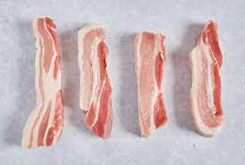

Stir Fry Pork

Rich and spicy stir fry pork with minimal ingredients.
Ingredients
- Doubanjiang
- Soy Sauce
- Mirin
- Ginger
- Small Onion
- Thin Sliced Pork Belly
- *Cooking oil and hot water*
How to prepare
- Slice onion and cut pork belly into one inch pieces.
- Combine ginger and liquid ingredients in small bowl and add one teaspoon of hot water.
- Heat pan to medium and add oil.
- Once oil is heated, add onions. Stir fry for one minute
- Add pork and cook about 90%.
- Lower heat and add sauce.
- Cook through then garnish and serve.